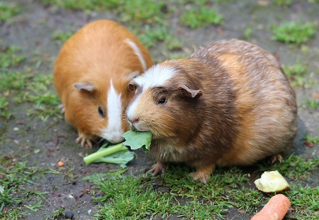

Small summary about Service Animals:
For people suffering from mental health issues, emotional support animals are a great way to provide treatment and coping mechanisms. Sometimes this emotional support is necessary just to help people function normally, especially for anxiety, for depression, and for learning disabilities. An emotional support or therapy animal is not quite the same thing as a service animal, which provides physical help to its owner. A therapy animal provides emotional support only.
- Emotional support animals provide comfort and stress relief to people suffering from mental health issues.
- Dogs are the most common type of emotional support animal because they are good at gauging human emotion and take well to special training.
- However, many other types of animals also make great emotional support partners-especially for people who are allergic to or afraid of dogs.
Dogs
Service dogs have become more common, since they are friendly and trainable. The can read human emotions and respond accordingly to our needs. Some type of dog breeds are better emitonal support animals than others. Golden Retrievers, Labrador Retrievers, Corgis, Poodles, Maltese, Havanese, Great Danes, and the Cavalier King Charles Spaniel are great for their affection toward people, even if your a stranger. Not so helpfull if your allergic to dogs though since its common.
Guinea Pigs
Guinea pigs are social creatures who live in large communities in the wild. If you plan to get a guinea pig as an emotional support animal, then it's recommended that you have at least two of them at the same time to keep each other company. Guinea pigs also don't need to be together from birth to live in the same enclosure. As long as they are safely introduced, most cavies cohabit without any issues. Other excellent rodent alternatives to guinea pigs include a mouse, hamster, or gerbil.